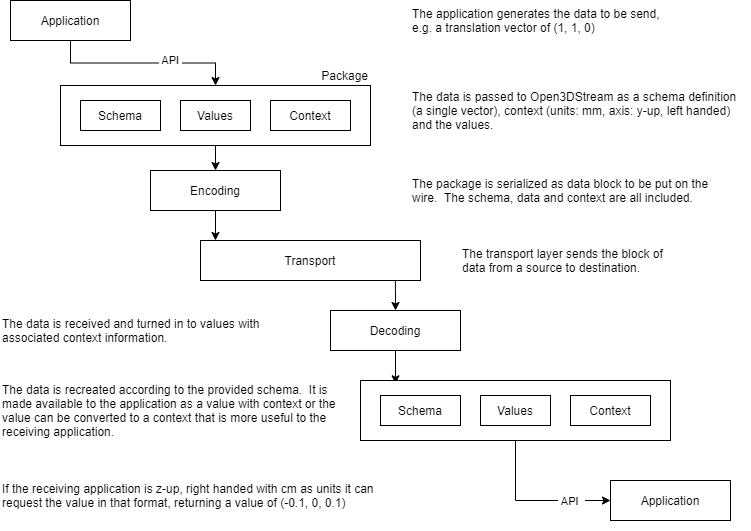

Background
This project creates a simple and unified way to allow devices and software applications to easily exchange 3d realtime animation data. Communication classes are provided to simplify the setup of network connections and math routines are provided to convert data between representations (euler/quaternion, z-up/y-up)
While theoretically any time sampled or event data that is taken from the real world and needs to be transmitted is considered, the focus of this project is on data captured by mobile devices (AR Kit, Accelerometer, GPS), Motion/Performance capture and Virtual Production (Camera Intrinsic/Extrinsic)
Issues with current implementations
Each application uses a different wire protocol or custom api
No one wire protocol supports all wanted data for streaming 3d data.
Different applications and devices use different data representations (units, rotation order, axis, etc)
What does the standard aim to achieve
Define the wire protocol for real-time streaming applications
A standard library may be used to achieve this rather than writing a new one
Abstract the data from the context providing automatic type conversion and range checking (units, coordinate systems, euler/quaternions)
Define an extensible system that so system itself doesn’t need to change in order to add new data types
Optimize transmission by sending the schemas or hierarchy separate from the data. This can be sent once at the start, at an interval, on request, or whenever a change is made
The per frame message can contain data that alerts the endpoints that the structure has changed (for instance)
Send real-time data as a buffer of plain data that can be correlated to the template/schema on the receiving end.
Existing Standards
VRPN
Unreal Live Link - message bus
RTTrPM
Requirements
Lightweight - bare minimum of dependencies for building
Easy to implement and use
Platform and transport agnostic
Transport options include zeromq and nng
Transport binary messages
Allow encryption of binary messages
Define a set of network transports used to send a block of data
Example
Use off the shelf serialization/deserialization
Quality of service control
Block Diagram
